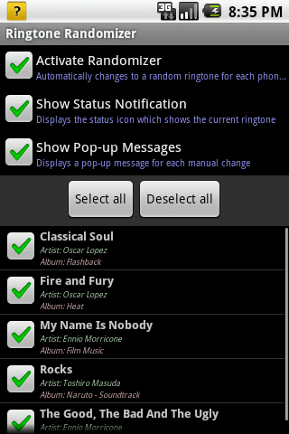
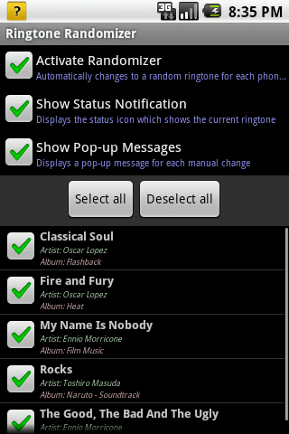

The Ringtone Randomizer is a simple application for Google Android to change your current ringtone.
You can either have your ringtone changed automatically after each phone call or you can use the widget, notification or menu itself to manually change it.
It is available on the Android Market under the name "Ringtone Randomizer", by JamesClonk.
Or you can download the source code here directly if you wish.
 
 

Copyright © 2010 Fabio Berchtold
This program is free software: you can redistribute it and/or modify
it under the terms of the GNU General Public License as published by
the Free Software Foundation, either version 3 of the License, or
(at your option) any later version.
This program is distributed in the hope that it will be useful,
but WITHOUT ANY WARRANTY; without even the implied warranty of
MERCHANTABILITY or FITNESS FOR A PARTICULAR PURPOSE. See the
GNU General Public License for more details.
http://www.gnu.org/licenses/